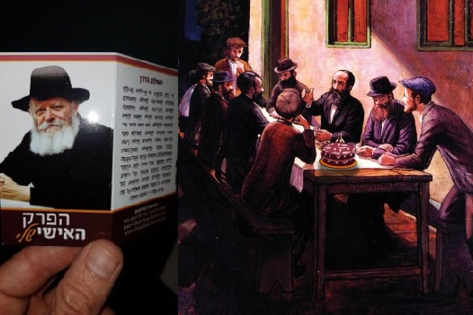

עשרים ותשע שנים ימלאו השבוע ל מבצע יום הולדת , אותו הגה הרבי מה”מ ביום הולדתה של
עשרים ותשע שנים ימלאו השבוע למבצע יום הולדת, אותו הגה הרבי מה”מ ביום הולדתה של הרבנית הצדקנית מרת חיה מושקא, כ”ה באדר תשמ”ח, כחודש ימים אחרי הסתלקותה * המבצע החביב תפס הדים רבים ומאז קירב אלפים לתורה ולמצוותיה בזכות השלוחים שידעו לחגוג ולציין את האירוע עם ‘מקורבים’ במועד החגיגי והשמח * “בית משיח” מס
עשרים ותשע שנים ימלאו השבוע למבצע יום הולדת, אותו הגה הרבי מה”מ ביום הולדתה של הרבנית הצדקנית מרת חיה מושקא, כ”ה באדר תשמ”ח, כחודש ימים אחרי הסתלקותה * המבצע החביב תפס הדים רבים ומאז קירב אלפים לתורה ולמצוותיה בזכות השלוחים שידעו לחגוג ולציין את האירוע עם ‘מקורבים’ במועד החגיגי והשמח * “בית משיח” מספר על מבצע יום הולדת. מסתבר שיש לו משמעות עמוקה הרבה מעבר לעוגה ובלונים…

דפיקות פתאומיות על הדלת. בעל הבית מרים את עצמו מהכורסה הנוחה וניגש לפתוח את הדלת, למרות שהוא לא זוכר שמישהו אמור להגיע עכשיו. בקיבוץ, אף אחד לא דופק סתם ככה בדלת בערב. למרבה ההפתעה, הוא מגלה מולו זוג ‘דוסים’. חיוך גדול על פניהם, והם מחזיקים בידם עוגה.
“מ–ז–ל ט–ו–ב” הם קוראים בקול אחד. “מזל טוב ליום ההולדת. מה, שכחת? יש לך יום הולדת!’” מיסטר ישראלי נותר על עמדו עם פה פתוח. הכול מתערבב לו מול העיניים. חרדים… עוגת יום הולדת… חיוך גדול… קיבוץ… האורח הלא–קרוא לא ממתין, מושיט לעברו יד ולוחץ בחמימות. “באנו לחגוג את יום הולדתך. זהו יום גדול. אפשר לשבת כמה דקות?”
מבלי אומר פותח בעל הבית הנדהם את הדלת ומחווה בידו לכיוון הספה. אשתו מגיחה מהמטבח כשמגבת בידה. גם עיניה קרועות לרווחה נוכח האורחים הלא–צפויים. כשהיא מתאוששת מעט, היא לא מתאפקת: “אבל מאיפה אתם יודעים שיש לו יום הולדת?!”…
זוג האורחים מתיישב בנינוחות על הספה הנעימה. ששש… לא להפריע. ממש כעת מתחילה התוועדות חסידית בקיבוץ צבעון…
הסיטואציה הזאת אינה פרי הדמיון של הכותב, אלא מקרה אמיתי שאירע, וכמותו אירעו בשנים האחרונות עוד אלפים רבים. זוגות של אנ”ש ושלוחים יוצאים לבתי ‘מקורבים’ (חלקם עדיין אינם יודעים שהם ‘מקורבים’) כדי לחגוג עמם את היומולדת. יום ההולדת הוא כמובן התירוץ להתוועדות חסידית ספונטנית, הזדמנות לשיחת קירוב בנושאי יהדות ונשמה, וחיבור החוגג ובני משפחתו לרבי מה”מ.
זוהי זווית אחת, הצצה קטנה ל”מבצע יום הולדת”, אף הוא ממבצעי הקודש שהגה הרבי במשך השנים לקירוב יהודים לבוראם וליהדותם.
כך נולד ‘מבצע’ חדש
זה הזמן לחזור בגלגל ההיסטוריה עשרים–ותשע שנים לאחור, כ”ה באדר תשמ”ח. תקופה לא–רגילה. בימים אלה הסתיימו ימי ה’שלושים’ לפטירתה של הרבנית חיה מושקא. הרבי שוהה בביתו ושם מתקיימות התפילות וסדרי עבודת קודשו.
בבוקרו של יום, בשעה עשר, יורד הרבי מהקומה השניה לתפילת שחרית המתקיימת בקומה הראשונה של ביתו. בסיום התפילה עולה הרבי לחדרו הפרטי בקומה השניה. ציבור המתפללים מתחיל לקפל את התפילין והטלית, עוד דקות אחדות הבית שהיה ארבעים שנות מנהיגות נסתר ורחוק מעין החסידים, יפונה מהמתפללים ויחזור לשקט הרגיל שלו.
פתאום נראית שוב דמותו של הרבי יורדת במדרגות. הפתעה. הלם. מבלי להשתהות ניגש הרבי היישר לעמוד התפילה ופתח בשיחת קודש מופלאה שהועברה בשידור ל–770. איש אינו זוכר מתי בפעם האחרונה נשא הרבי שיחת בוקר… השיחה נפתחה בגילוי עובדה מרעישה - היום, כ”ה באדר, הוא יום הולדתה של הרבנית הצדקנית נ”ע. הרבי לא סתם מאזכר זאת, ובהמשך הדברים (בציינו כי הענין לזכות ולעילוי נשמתה) מעלה הרבי הצעה הקשורה למנהגי יום הולדת שיעשה כל יהודי, אנשים ונשים וטף, ביום הולדתו. “שכל אחד ואחת יעשה ביום הולדתו התוועדות של שמחה, ביחד עם בני ביתו או גם חבריו וידידיו כו’, כדי שקבלת ההחלטות הטובות (בלי נדר) ביום הולדתו (שמזלו גובר) תהיה באופן של שמחה, שעל ידי זה יתוסף גם בקיום ההחלטות הטובות מתוך שמחה וחיות”.
הרבי מוסיף ומאריך במעלתו של יום זה שבו מזלו של אדם גובר, ומחדד את דבריו של הרבי הריי”צ באומרו שגילה לעולם דברים שהיו בעבר נהוגים וידועים רק ליחידי סגולה. בהמשך אותה שיחה הרחיב הרבי בנוגע להתוועדויות שיש לערוך ביום זה: “…כדאי ונכון ביותר שכל אחד ואחד יעשה ביום הולדתו התוועדות של שמחה, ביחד עם בני בתו, או גם חבריו וידידיו וכו’”.
הרבי לא מסתפק בכך, ובמהלך כל אותה שנה הוסיף וחיזק את ההנהגות שצריכות להיעשות ביום ההולדת. כך למשל, בהתוועדות שהתקיימה באחרון של פסח אותה שנה, קבע הרבי את עשרת ההנהגות שצריכים להעשות ביום זה על ידי בעל יום ההולדת.
באותה שיחה אף פרך הרבי את דבריהם של אלו שהתנגדו באותה תקופה למבצע יום הולדת בטענה שהמקום היחיד בתורה בו מוזכר עניין יום הולדת, הוא אצל מלך מצרים. הללו הסיקו מכך מסקנה, שאין צריך לעשות מיום זה עניין רציני. הרבי דחה את טענתם באומרו: “גם אם עד עתה לא היה הדבר נהוג ומפורסם כו’ הרי זה כמו בכמה וכמה עניני תורה ומצוות שנתגלו בזמנים מיוחדים, ובפרט ענינים שמדברי סופרים ומנהגי ישראל כו’ שנתגלו על ידי תלמיד ותיק וכו’, וריבוי “עשרה מישראל” שכבר נוהגים כן כמה וכמה שנים בפועל - ובנדון דידן, שכבר נתקבל על ידי כמה וכמה מישראל ומספרם הולך וגדל”.
עד מהרה הבינו החסידים כי בעצם הרבי יצא במבצע נוסף - ‘מבצע יום הולדת’ (השיחה הוגהה בהמשך על ידי הרבי).
שלושים אלף הרצליינים…
ברבות השנים אימצו רבים מהשלוחים את מבצע יום הולדת. לכאורה, אין מבצע קל ונעים מזה - לחגוג יום הולדת. לכל אדם יש מפתח ללב, וצריך רק למצוא את המפתח המתאים שיידע לפתוח אפילו שערים כבדים. מבצע יום הולדת עונה בדיוק על ההגדרה הזאת. איזה אדם לא שמח לחגוג את יום הולדתו האישי?
אולם בעוד העולם כולו חוגג בעוגה ונרות, הרי שחסידי חב”ד חוגגים בהתוועדויות ובמתנות לרבי ולקב”ה בדמות החלטות טובות. המפתח נשאר אותו מפתח - מסיבת יום הולדת.
מספר הרב ישראל הלפרין, שליח הרבי ורב קהילת חב”ד בהרצליה: “בית חב”ד בהרצליה היה מהחלוצים במבצע יום הולדת. אנחנו משגרים מכתב ברכה ואיחולים לתושבים שרשומים אצלנו במאגר. לא אף זאת, אלא זכינו שהרבי מה”מ הגיה את תוכן המכתב ואף הורה להוסיף שני משפטי קודש בנוסח המכתב שהכנו. כיום אנו שולחים מכתבי איחול וברכה לבעלי יום הולדת עם התאריך המדויק של יום הולדת ליותר משלושים אלף תושבי הרצליה! לכל אחד מבעלי יום ההולדת מוצע לחגוג אתו את היום באופן יהודי וחסידי”.
“דרך נפלאה ששובה ללבבות”
אחד השלוחים שפועלים במרץ רב במבצע יום הולדת, הוא הרב יעקב צבי (קובי) בן ארי, שליח הרבי בקיבוצים. פעילותו משתרעת על פני מאות קיבוצים בדרום הארץ ובצפונה. כקיבוצניק לשעבר מקיבוץ ‘מעיין צבי’ שבכרמל, הוא מכיר היטב את נפשותיהם של הקיבוצניקים ומשקיע מאמצים רבים לבקוע גם את החומות הכבדים שהקימו הקיבוצניקים בינם לבין היהדות.
“כבר בימים הראשונים לפעילות הממוסדת בקיבוצים - נזכר ר’ קובי - נתקלתי בבעיה בכל הנוגע לשמירת קשר עם אותם אנשים שערכתי אתם את הפעילות. בתחילה שלחתי חומר קריאה ביהדות באמצעות הדואר; בהתקרב חג הפסח חילקתי מצה שמורה לכל אחת מהמשפחות שהכרתי. לאחר זמן הרגשתי ש’זה לא זה’, וחיפשתי דרכים שונות לא רק לחזק את הקשר אלא אף להעמיקו.
“באחד מביקוריי בבניין צעירי אגודת חב”ד, התגלגל לידי דף של מבצע יום הולדת שנוהל באותה תקופה על ידי המשפיע הרב לוי יצחק גינזבורג מכפר חב”ד. התלהבתי מהעניין וחשבתי שזה יכולה להיות דרך טובה בשביל לשמור על קשר…
“מאז, בכל ערב טלפנתי אל אותם אנשים ומתעניין אצלם מתי יחול יום הולדתם. רוב הנשאלים, לתדהמתי, כלל לא ידעו את התאריך העברי בו נולדו. לקחתי מהם את התאריך הלועזי ותרגמתי אותו לתאריך עברי.
“לאחר שסידרתי את הרשימה, הושבתי מדי ערב ישב זוג חב”דניקים, כאשר האברך היה מתקשר לאנשים ורעייתו לנשים. בשפה נעימה הזכירו להם את עובדת יום הולדתם. הם היו מנצלים את ההתרגשות הרבה שאפפה את האנשים באותן דקות, ובדרכי נועם היו מעוררים אותם אודות הוראתו של הרבי מה”מ בדבר קיומם של מנהגים מיוחדים ביום זה, וקבלת החלטות טובות בתורה ומצוות.
“עם השנים רשימת אנשי הקשר של בית חב”ד גדלה למספרים עצומים, וממאות זה הגיע לכמה אלפים. לטלפן לכל אחד מהם זו היתה משימה בלתי אפשרית.
“פניתי אפוא לגרפיקאי שיעצב לי תעודת יום הולדת מהודרת, התעודה כללה פרק תהילים אישי של כל נמען ואת פרקו של הרבי מלך המשיח, ובנוסף את ההוראות של הרבי בנוגע להנהגות שצריכות להיות ביום הולדת. את ההוראות ערכתי בשפה קלילה וברורה יחד עם כמה מילות ברכה. עטפנו את התעודה בלמינציה וכך הפכה לתעודה מהודרת ומכובדת.
“התגובות של האנשים לתעודה היו מרגשות לא פחות. לימים כשהסתובבתי בבתים של אנשים אליהם שלחנו את התעודה, נוכחתי לראות שאלו תלויים בגאון על אחד מקירות הבית.
“זוהי דרך נפלאה ששובה ללבבות” - מעיד ר’ קובי בן–ארי - “אדם שמקבל ביום הולדתו תעודה מהודרת שמזכירה לו איך יום חשוב זה משתקף במשקפי היהדות, אין בכלל שמץ של ספק שהדבר גורם אצלו להתעוררות מסוימת גם אם לא מרגישים זאת בטווח המידי.
“ישנו אדם מבוגר תושב אחד הקיבוצים בדרום הארץ, בכל פעם שאני מגיע לבקרו הוא מספר לי בגאווה על התקדמותו ביהדות, וכל זה התחיל רק בזכות אותה תעודה הנשלחת אליו בהתמדה בכל יום הולדת”.
משיחת טלפון ליום ההולדת - לדברי תורה באזכרה בקיבוץ
אחד הפעילים שמקדיש לכך זמן רב, הוא הרב שניאור הראל, העוסק בסדנאות להנחלת חגי ישראל במסגרת עמותת חינוך וחסד שהקים אביו ר’ שמריה הראל. ר’ שניאור פעיל בכשלושה–עשר קיבוצים בסביבות נצרת עילית.
בפיו של ר’ שניאור ישנם סיפורים רבים הקשורים למבצע יום הולדת, והוא בוחר לספר סיפור ‘טרי’ שאירע ממש לאחרונה, בסביבות פורים. “כשבועיים ימים לפני פורים, נטלתי את רשימת ימי ההולדת של אנשים באיזור שלי, והתחלתי להתקשר לאנשים בתקווה שחלק מהם יסכימו שנבוא להתוועד עמם לכבוד היום. בעבר היינו מגיעים באופן ספונטני וחוגגים, אבל עם הזמן, היה ביקוש לתיאום מוקדם. התקשרתי אפוא לאנשים להזכיר להם על יום ההולדת, ואלו התרגשו מאד. כמובן שהזכרתי להם את חשיבותו של היום ומנהגיו.
“אחד הטלפונים היה לאישה תושבת קיבוץ גבת. מיילדת במקצועה. הצגתי את עצמי בפניה והזכרתי את יום הולדתו של בנה. היא שמחה והודתה על הברכות והאיחולים; כמו תמיד הזכרתי לה את מנהגי היום. בטרם סגרתי את הטלפון, עצרה אותי ואמרה: ‘אני רוצה שתבוא לבדוק אצלי בבית את המזוזות’. אמירה כזאת מפי קיבוצניקית, זה בהחלט מאורע מרגש וחשוב. שמחתי כמובן על ההזדמנות וקבענו זמן. באחד הימים שלאחר מכן הגעתי לביתה והורדתי את המזוזות לבדיקה. ואז היא מספרת לי: ‘שניאור, אל תשאל, השבוע חשבתי על זה שאני רוצה לבדוק את המזוזות בבית אבל אני לא יודעת איך ולמי לפנות אלי, ובדיוק אתה התקשרת אלי’… אני בטוח שזה לא סוף הסיפור איתה, ויהיו עוד התפתחויות חיוביות”…
ר’ שניאור מוסיף ומספר: “באותו יום התקשרתי לאדם בשם אלי, איש קיבוץ הזורע. מעולם לא דיברנו קודם לכן. ‘אלי, מזל טוב’. ‘על מה מזל טוב?’ ‘לבן שלך יש היום יומולדת’, אמרתי לו. התפתחה בינינו שיחה, והצעתי שאבוא לעשות התוועדות לכבוד היום. הוא הסכים, חשב לרגע ואמר ‘ביום חמישי אני לא יכול, כי אני נוסע לאירוע, וביום שישי גם לא אוכל, כי אהיה בבית רפואה’. כמובן ‘שנתפסתי’ על זה, ושאלתי מה קרה. הוא השיב לי שהוא צריך לעבור ניתוח. ‘נו, אז כעת אנחנו חייבים להיפגש כדי שתוכל לכתוב לרבי קודם לכן ולבקש ברכה’, אמרתי. למרבה הפליאה, הוא הסכים (צריך לזכור שמדובר בקיבוצניקים, הם עם עקשן ורחוק מאד מיהדות. שליחים שפועלים בערים, יתקשו להבין את גודל הקושי).
“לבסוף סיכמנו שניפגש ביום שישי בשתיים בצהריים, אבל שוב הוא נזכר שיש לו אזכרה שהוא חייב להשתתף בה. ואז הוא ‘זרק’ לי הצעה: ‘למה שלא תבוא לאזכרה?’ הוא סיפר לי שלפני 12 שנים אירעה תאונת דרכים קשה ליד קיבוץ הזורע בה נהרגו זוג הורים ובתם. מאז מתכנסים החברים הקרובים בכל שנה בהר, ממש מעל מקום התאונה. כמובן שששתי על הזדמנות הפז להיפגש עם כמה קיבוצניקים ולשאת בפניהם דברי תורה.
“בפועל, נפגשתי עם אלי שעה קלה קודם האזכרה, והוא כתב לרבי וזכה לקבל תשובה בעניין ביטחון בה’, ועל כך שצריך לחשוב על אותיות של דברי תורה. כן הורה הרבי לבדוק את התפילין ואת המזוזות ולהשתתף בהתוועדות חסידית. אמרתי לו: ‘אלי, יש משהו מהתורה שאתה יודע?’ הוא אמר לי ‘כן, אני יודע את ‘שמע ישראל”. אמרתי לו: ‘נהדר, תחזור על הפסוק הזה לעצמך מדי פעם’. לגבי בדיקת תפילין ומזוזות - תפילין לא היו לו כלל, ואת המזוזות סיכמנו לבדוק בהזדמנות קרובה. ב”ה הניתוח עבר בהצלחה רבה.
“ואז הוא ביקש מעצמו להניח תפילין. הבנתי שהיהודי הזה חווה ממש כעת התעוררות פנימית.
“בהמשך התחילו להתקבץ החברים לאזכרה. הזקן שבחבורה, קיבוצניק כבן שבעים, פתח ואמר כשדמעות בעיניו: ‘התכנסנו פה לכבוד יום הזיכרון שלהם. ביקשנו, שניאור, שתבוא כדי שתגיד דברי תורה לעילוי נשמתם’… מי היה מאמין לשמוע מילים כאלו מפי קיבוצניק ותיק?! משפטים כאלה זה ממש גאולה! דיברתי בפניהם כמה מילים על עניין של נשמה וזכויות עבור הנשמה, וכן עניין של עילוי הנשמה, והם התרגשו מאד. והנה שוב הפתעה, כשאחד מהם פנה אלי וביקש רשות לומר את הקדיש, ומבקש שיהיה זה גם לעילוי נשמת ההורים שלו, שכן מעולם לא אמר עליהם קדיש…
“וכל זה בזכות מבצע יום הולדת…” מסכם ר’ שניאור הראל את סיפורו.
מגיעים אל האדם למקום הכי אישי שלו
גיסו של ר’ שניאור הראל, הוא הרב דור ביטון. זמן קצר לאחר נישואיו, החל לצאת עם רעייתו הטריה, מרים, למבצע יום הולדת, במסגרת הפעילות בקיבוצים. “הרב בן ארי גילה לנו כי יש מקומות בהם לא נותנים דריסת רגל לדת, אבל הוא יצר פורמט מעניין: אנחנו לא מגיעים לדבר על דת, אנחנו מגיעים להגיד לכם מזל טוב ליום הולדת. ולא להאמין, זה תפס. מסתבר שאנשים מתרגשים לגלות שמישהו זוכר את יום ההולדת שלהם, גם אם עד לפני דקות ספורות הם בכלל לא הכירו.
“אז איך זה עובד? יש אנשים שנרשמו, יש שהביאו שמות של חברים, ואנחנו מקבלים רשימה של ימי הולדת, לוקחים את עצמנו, עם חיוך וערכת יום הולדת, ונוסעים. בלי תיאומים מראש ובירוקרטיה מלאה. פשוט שואלים בין שבילי הקיבוץ איפה גר בעל יום ההולדת, ודופקים לו על דלת הבית”.
הזוג הצעיר התלבט נוכח ההצעה, ולבסוף לקח על עצמו את השליחות. מפרויקט ‘מפחיד’ זה הפך לחוויה זוגית כיפית ומגבשת: נוסעים, רואים נופים, פוגשים אנשים חדשים, סגנונות לא מוכרים, וגם - חוזרים עמוסים בסיפורים. כל יציאה כזו היא סיפור. לא תמיד הסיפור הוא מי יודע מה מסעיר, אבל סיפור תמיד יש. “מסתבר, שלמרות הלבושים השונים - יש בינינו ובינם המון קשר”, סיפרה גב’ מרים ביטון. “צריך רק ליצור את החיבור הראשוני - שבמקרה שלנו זה יום ההולדת, ומשם מתגלגלים הלאה. בכלל, לדבר עם אדם על יום ההולדת שלו, זה גאוני: מגיעים אל האדם למקום הכי אישי שלו. הוא מיד נמס! אנשים היו שואלים — ‘מה, הגעתם בשבילי? בגלל יום ההולדת? באמת? איך הגעתם אליי?…’, ואז כבר היינו ממשיכים לדבר.
“הרבה פעמים היינו אומרים שבאנו ליום ההולדת של ,X ואז אדון X היה אומר — ‘התבלבלתם, חברים. זה היה לפני שבוע או בעוד כמה ימים’, וזה פתיח מצוין בשביל להסביר על יום הולדת עברי ועל סגולותיו של היום. בקיצור, חווינו הרבה סיפורים”.
באחת הפעמים הגיעו בני הזוג ביטון לאחד הקיבוצים, ונכנסו לביתה של משפחה שהנכד שלהם, בחור, עבר תאונה עם חיית בר. במשך חודש הוא היה בתרדמת, משותק לגמרי. בתחילה היה בבית רפואה, משם הועבר לבית לוינשטיין, אבל משראו שאין התקדמות, הודיעו למשפחה שיעבירו אותו למחלקה גריאטרית, שם ישהה עד סוף ימיו, חס ושלום. זה היה חנוכה, ובדיוק הגיעו בני הזוג ביטון לבית הסבא והסבתא. כשראו אותם, זיק נדלק בעיניהם. הם התקשרו לאב הפצוע, והזמינו אותו להגיע. הוא הדליק חנוכיה, וסיפר על הבן.
מספרת הגב’ ביטון: “אמרנו לו, ‘בא תכתוב לרבי, ותקבל על עצמך החלטה טובה’. הוא קיבל על עצמו להניח תפילין פעם בשבוע. במכתב של הרבי נאמר — ‘שמחה פורצת גדר’. הדלקנו מוסיקה, והגברים רקדו. השמחה באמת פרצה שם את כל הגדרות. למחרת הילד התעורר (!) המשפחה הזו מספרת על הנס שלהם כל הזמן. הבחור, ברוך ה’, יצא מזה לגמרי, והיום הוא עובד, הולך ומדבר כאחד האדם…
“יש עוד סיפורי ניסים רבים. פשוט רואים את הרבי והניסים שהוא מחולל בכל רגע ורגע. המדהים הוא, שאלו אנשים שלא קשורים לרבנים או לתפילות, לכאורה, אבל יש להם רגש של חמימות יהודית שאין בשום מקום אחר.
“פעם הגענו לקיבוץ אפיקים” מוסיפה לספר הגב’ ביטון, “בשער עמד שומר רוסי שלא הסכים להכניס אותנו, בשל הנהלים, אבל כן הסכים להניח תפילין. אחר כך הוא ביקש להתפלל עם התפילין תפילת ‘שמונה עשרה’. כמובן שבעלי הסכים, והשומר נעמד לתפילה במשך כחצי שעה. התבוננתי בו מתפלל, וזה היה מחזה מופלא. יהודי שנראה כל כך רחוק, מתפלל בכל כך הרבה כוונה!”
בני הזוג ביטחון קובעים בנחרצות מתוך ניסיונם, כי הפורמט הזה יכול להיות בכל מקום, בכל עיר, שכונה או מושב: “פשוט להגיע, לשבת ולדבר עם הבנאדם על נקודה אישית — יום הולדת, שמחה במשפחה או כל דבר אחר שנוגע לו. צריך פשוט למצוא את האנשים האלו ולמצוא את הנקודה המעניינת אותם, ומשם החיבור כבר ימשיך. העלות של המבצע הזה היא מינימלית, הסיפוק הוא עצום”.
הספר “מבצע יום הולדת” שהרבי ביקש כמתנה ליום ההולדת
אחד הפרויקטים הנלווים למבצע יום הולדת, הוא הספר “מבצע יום הולדת” שכתבה הגב’ שירה כץ, תושבת רעננה בדיוק כדי לקדם את המבצע של הרבי וחשיבות משמעות היום בחייו של כל אדם, איש ואישה, ילד או ילדה.
“התחלתי לכתוב את הספר ‘מבצע יום הולדת’ בסוף חודש טבת תשע”א. בתחילת חודש אדר ב’ כתבתי על כך לרבי, וזכיתי לקבל תשובה ב’אגרות קודש’ ובה מבקש הרבי ממחבר ספר שהספר יישלח אליו, והוא מקווה שיגיע לספריה שלו עד י”א בניסן. הספר היה בשלב רחוק מזה, אבל בעקבות התשובה, הבנתי שעלי להזדרז.
סיימתי את כתיבת הספר וביקשתי מההוצאה לאור (“חיש”) שיזדרזו להוציאו לאור לקראת התאריך האמור. הם הביעו ספק בעניין, לאור הזמן הקצר שעמד לפנינו. ביום ז’ בניסן פניתי שוב והפצרתי שלפחות יכינו עותקים בודדים כדי שאוכל לשלוח לספריה של הרבי עד י”א בניסן, כפי שהרבי ביקש. הם אכן עשו מאמצים גדולים, והרגע המרגש הגדול מבחינתי היה בט’ בניסן, כשקיבלתי במעטפה חומה כמה עותקים. הרגשתי כמו ילד חדש בא לעולם…
כתבתי על כך לרבי, והתשובה שקיבלתי באגרות הקודש הייתה - לשלוח את הספר לספרייה שלו, ואם אפשר על ידי שליח. כבר באותו יום מצאתי מישהי שנסעה לחצרות קדשנו, וביקשתי ממנה שתביא את הספר לספריה של הרבי עוד לפני יום הולדתו של הרבי. זה היה יום שישי, ובאותו יום כתבתי לרבי שהספר יצא לאור והנני שולחת אותו על ידי שליחה שנוסעת. התשובה שקיבלתי שוב הדהימה אותי - הרבי אישר את קבלת הספר ואיחל תשואות חן…
למה החלטת לכתוב את הספר הזה?
את הספר הזה החלטתי לכתוב בעקבות מבצע יום הולדת שהגה הרבי. רציתי להעביר את המסר שבחשיבותו של היום. מתגובות שקיבלתי במשך השנים, אני יכולה להעיד שהספר חדר ללבבות רבים. הוא הגיע לקהלי יעד מגוונים: נשים דתיות, חרדיות כמו גם כאלה שמעולם לא שמעו על המשמעות המיוחדת של יום ההולדת. התוכן של הספר ריגש אנשים רבים ולימד אותם מה עושים ביום הולדת.
שמעתי על מישהי שחילקה את הספר לנשים לא דתיות בחברת הייטק בה עבדה. היא סיפרה שאחת המנהלות התרגשה והתחילה לבכות, כי הנקודה שם נגעה בה עמוק. על פניו זה נראה כמו ספר ילדים, אבל כשקוראים אותו, מגלים בו עומק לצד פתגמים של הרבי מספר ‘היום יום’. קיבלתי תגובות מכמה נשים שאמרו לי, שלפני יום הולדתן, הן מוציאות את הספר ונזכרות מה עליהן לעשות.
אני מרגישה זכות גדולה שהרבי העביר זאת דרכי.
מקיבוץ ‘עין השופט’ לבנגקוק
מספר ר’ יעקב צבי (קובי) בן ארי: “לפני כמה שנים יצא לי לשהות שלושה ימים בבנגקוק. במהלך שהותי במקום החלטתי לצאת לרחובה של עיר על מנת לפגוש מטיילים ישראלים. יצאתי לרחוב ‘קוואסן’ המפורסם, והסתובבתי בו הנה והנה. לפתע ראיתי כמה גויים מקומיים שמצאו את עיסוקם במכירת שרצים וחרקים.
“כמעט התרחקתי מהמקום, אילולא מצאתי לפתע זוג ישראלים ששוחחו בעברית. ניגשתי אליהם והתעניינתי לשלומם. תוך כדי שיחת שלום נימוסית שאלתי אותם מהיכן הם, והצעירה ענתה שהיא מתגוררת בקיבוץ ‘עין השופט’ שבצפון.
“השיחה התארכה, וסיפרתי לה בין השאר כבדרך אגב שאני מכיר כמה אנשים מאותו קיבוץ. היא התעניינה את מי אני מכיר, ועניתי כדוגמא: בתיה רזניק. כששמעה את דברי, חייכה ואמרה “זו אמא שלי”. עכשיו תורי היה להפתיע, ובקשתי ממנה להיזכר אם היא מכירה אותי. היא חשבה קמעה ואז אמרה: “רגע, אתה הוא זה שהיה שולח לי בכל יום הולדת תעודה?” כשעניתי בחיוב, התלהבה מאוד וסיפרה שהיא תולה את התעודות בחדרה, ולעיתים היא קורא את פרק התהילים שמופיע בה…”